데이터만으로는
로봇을 완성할 수 없다 On RL & IL
범용성과 처리량을 동시에 얻으려면 신경망 바깥을 봐야 한다. Pulkit Agrawal은 컨트롤러를 귀납 편향으로 재해석하고, 위치 대신 접촉을 최적화하며, 평생 학습에는 덜 잊는 on-policy 학습이 필요하다는 세 갈래의 논증을 제시한다.
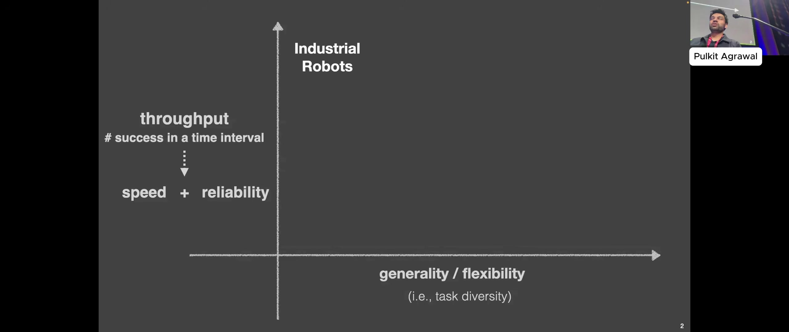
범용 로봇의 병목은 데이터 규모만이 아니다
이 강연은 로봇 학습의 지능을 신경망과 데이터셋에만 배치하는 관행을 비판한다. 같은 데이터·아키텍처·로봇에서도 컨트롤러 게인만 바꾸자 성공률이 5%에서 71%로 달라졌다는 사례는, 물리적 상호작용 계층이 학습 결과를 구성하는 핵심 변수임을 보여준다.
이어서 Agrawal은 휴머노이드 모션 이미테이션을 위치 추종 문제로만 다룰 때 예상치 못한 접촉에 취약해진다고 지적한다. SoftMimic은 참조 궤적을 보존하면서 힘과 순응성을 함께 제어해 학습하지 않은 하중 끌기까지 일반화한다.
마지막 논지는 on-policy 학습이다. 물리 세계의 노이즈를 실제 정책 분포에서 다루려면 수동적으로 수집된 고정 데이터셋만으로는 부족하며, RL은 반응성과 자기개선뿐 아니라 기존 능력을 덜 잊는 암묵적 편향도 제공한다. 발표는 이를 RL’s Razor로 정리한다.
발표를 관통하는 세 가지 전환
세 논지는 서로 독립적이지 않다. 정책과 물리 세계 사이의 층을 복원하고, 그 층에서 접촉을 학습하며, 실제 정책이 만나는 분포에서 계속 갱신하자는 하나의 주장으로 연결된다.
게인은 강성이 아니라 학습 편향이다
작은 게인도 큰 목표 오차와 결합하면 큰 토크를 만들 수 있다. 따라서 게인은 원하는 움직임만이 아니라 BC·RL·sim-to-real이 어떤 정책을 배우기 쉬운지를 기준으로 선택해야 한다.
참조 궤적보다 접촉 대응이 중요하다
위치 추종만으로는 사람, 벽, 하중 같은 외부 세계에 반응하지 못한다. 힘과 순응성을 정책 출력에 포함하면 참조 동작을 유지하면서도 예상치 못한 상호작용을 흡수할 수 있다.
on-policy 학습은 덜 잊는다
RL은 현재 정책에서 출발해 성공 가능한 가까운 해를 찾는다. 이 암묵적 KL 최소 편향은 명시적 KL 규제가 없어도 나타나며, 순차 학습에서 기존 능력의 망각을 줄이는 방향으로 작동한다.
강연의 논리 구조
컨트롤러는 귀납 편향이다
표준 로봇 학습 도식은 과제 목표가 신경망을 거쳐 관절 목표로 변환되고, 동역학을 지나 물체 상태를 바꾸는 흐름을 그린다. 그러나 연구의 관심이 신경망에 집중될수록 실제 상호작용이 일어나는 로봇·접촉 동역학은 회색 블랙박스로 밀려난다.
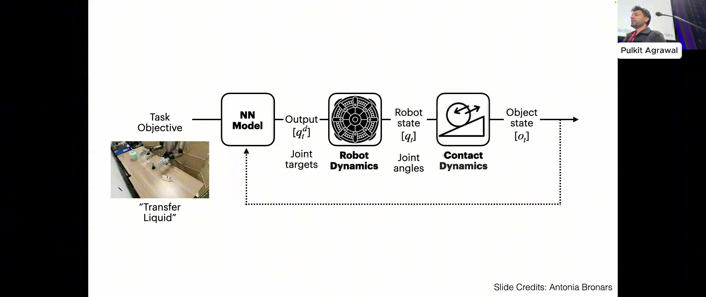
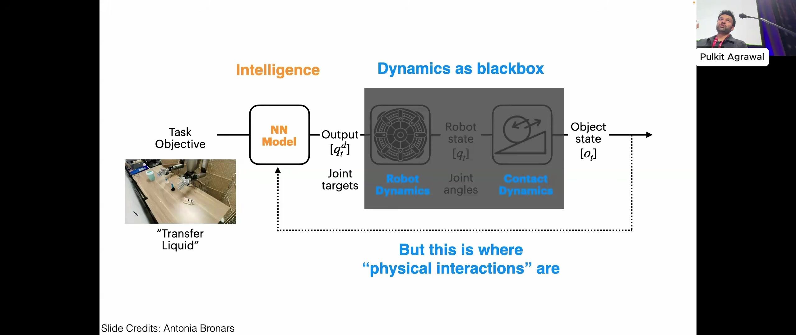
같은 조건에서 성공률이 14배 갈렸다
강연에서 가장 강력한 반례는 두 정책의 비교다. 데이터량, 네트워크 구조, 엔드투엔드 학습 방식, 로봇 하드웨어가 모두 같은데 한쪽은 100회 중 5회, 다른 쪽은 71회 성공했다. 차이는 비례·미분 게인 Kp, Kd뿐이었다.
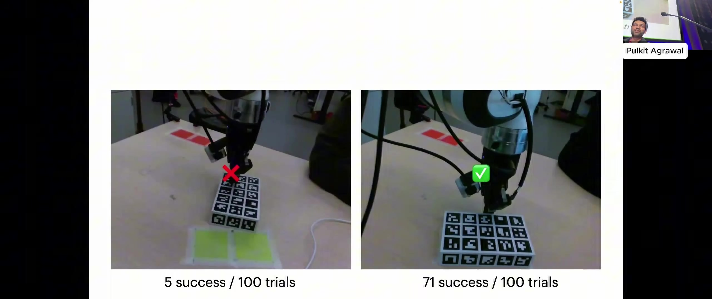
정책은 보통 10~30Hz로 목표 상태를 출력하지만, 실제 토크나 전류는 1kHz 안팎의 컨트롤러가 만든다. 모든 학습 정책은 이 계층을 통과한다. 연구 보고에서 컨트롤러 설정을 생략한다면, 신경망 성능으로 보이는 차이가 실제로는 저수준 제어 편향에서 비롯됐을 가능성을 배제할 수 없다.
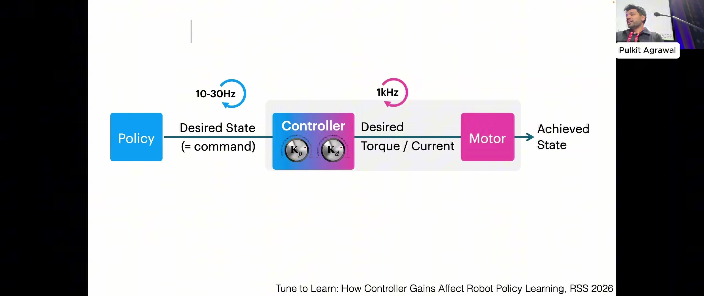
“높은 게인 = 뻣뻣한 로봇”이라는 직관의 한계
고전 제어에서는 높은 비례 게인이 뻣뻣한 거동을 만든다는 설명이 자연스럽다. 그러나 학습 정책은 목표 자체를 조절할 수 있다. 게인이 작으면 더 큰 목표 오차를 만들어 동일한 토크를 낼 수 있고, 게인이 크면 더 작은 오차로 같은 토크를 만들 수 있다. 그 결과 뻣뻣한 게인으로 순응적 행동을, 순응적 게인으로 뻣뻣한 행동을 학습하는 반례가 가능하다.
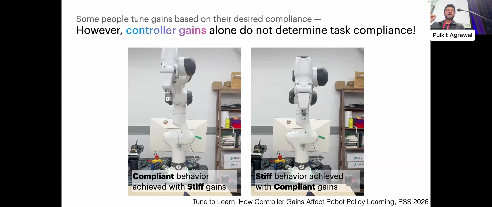
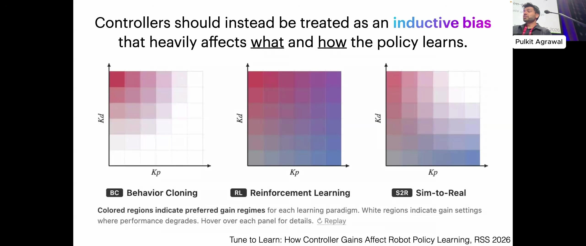
“컨트롤러는 정책이 무엇을, 어떻게 학습할지를 바꾸는 귀납 편향이다.” 강연의 핵심 주장을 요약한 번역
과제가 아니라 학습 방식에 맞춰 게인을 고른다
여러 휴머노이드 보행·양팔 조작·단일 손 조작 실험에서 관찰된 경향은 다음과 같이 정리된다.
| 학습 패러다임 | 선호되는 게인 경향 | 해석 | 실무적 함의 |
|---|---|---|---|
| 행동 복제(BC) | 순응적·과감쇠 | 폐루프 실행 중 생기는 예측 오차를 순응성이 흡수한다. | 게인 튜닝이 BC 성능 비교를 크게 오염할 수 있다. |
| 강화학습(RL) | 상대적으로 둔감 | 정책이 게인과 결합된 행동을 직접 최적화한다. | 게인이 주로 일반 하이퍼파라미터 문제로 남는다. |
| Sim-to-real | 극단을 피한 중간 영역 | 과도한 강성이나 감쇠가 모델 오차를 증폭할 수 있다. | 전이 성능을 기준으로 제어 영역을 함께 탐색해야 한다. |
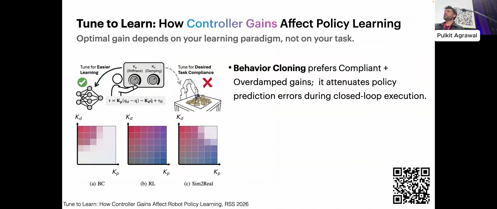
위치가 아니라 접촉을 최적화하라
휴머노이드 학습은 참조 궤적을 따라가고 그 오차를 보상으로 삼는 모션 이미테이션에 크게 의존한다. 이는 복잡한 보상 설계를 우회하는 좋은 방법이지만, 궤적 바깥에서 일어나는 물리적 상호작용을 학습 목표에서 지워버릴 수 있다.
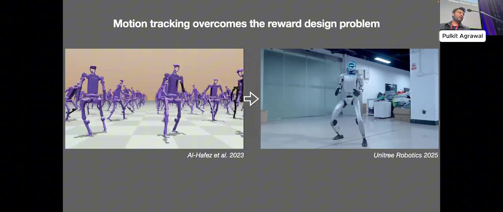
현대 로봇의 고유수용성 액추에이터는 외부 힘을 추정할 수 있다. 그렇다면 위치만 출력할 이유가 없다. 정책이 가할 힘과 순응 정도를 함께 결정하도록 행동 공간을 확장할 수 있다.
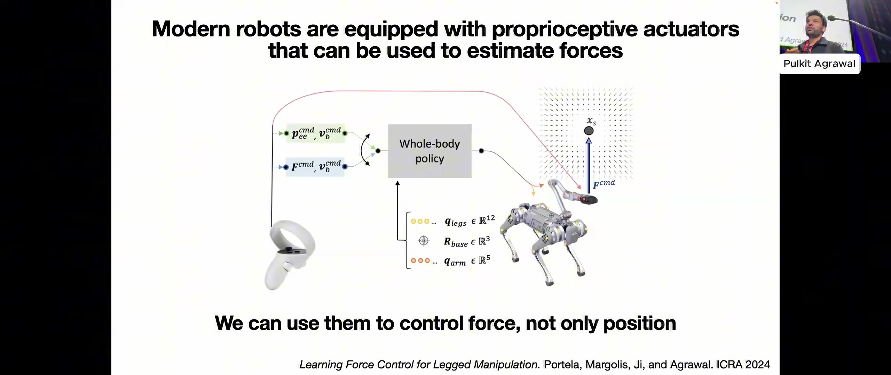
SoftMimic: 궤적 주변에서 순응하는 정책
SoftMimic은 참조 동작을 버리지 않는다. 대신 네트워크가 로봇이 가할 힘과 순응성을 함께 제어하도록 만든다. 뻣뻣한 기준선은 예상하지 못한 블록 더미와 충돌해 구조물을 무너뜨리지만, SoftMimic은 접촉을 흡수한다. 사람이 밀거나 당겨도 참조 궤적을 맹목적으로 고수하지 않고 힘의 방향에 반응한다.
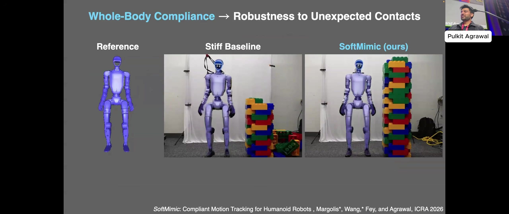
이 설계의 의미는 충돌 회피를 넘어선다. 자유 보행만 학습한 정책이 무거운 하중을 끄는 상황으로 zero-shot 일반화했다. 데모가 상위 수준의 움직임을 제공하고, 힘 기반 제어가 그 계획을 현재의 물리 조건에 맞게 실행한 결과다.
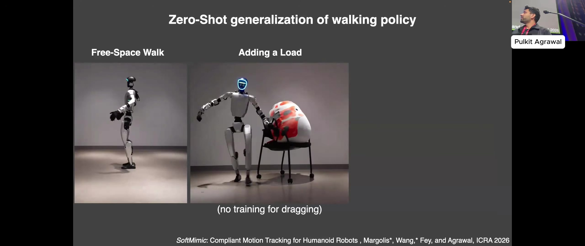
SoftMimic 사례는 힘·순응 제어가 예기치 않은 접촉과 하중 변화에 강건성을 제공할 수 있음을 보여준다. 다만 모든 조작 과제나 하드웨어에서 같은 수준의 일반화가 보장된다는 증거는 아니다.
BC는 플래너, RL은 컨트롤러
언어 모델과 로봇은 모두 확률적 정책을 학습하지만, 이들이 작동하는 세계는 다르다. 텍스트 생성에서는 관측과 실행의 경계가 비교적 결정적이다. 물리 세계에서는 관측, 구동, 접촉 동역학 모두에 노이즈가 존재한다.
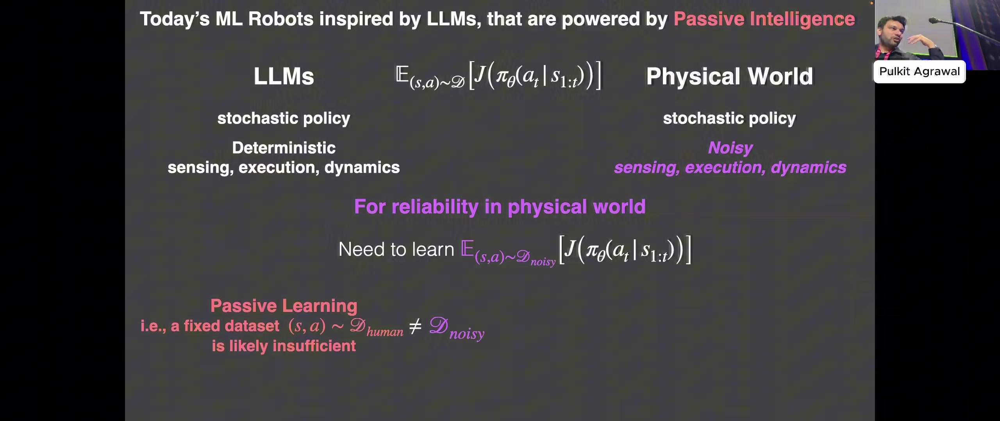
이 차이에서 강연의 on-policy 주장이 나온다. 고정 데이터셋에 의존하는 수동적 학습은 사람이 수집한 분포가 실제 정책의 실패 분포와 우연히 일치하기를 기대한다. 반면 로봇이 현재 정책으로 행동하고 그 결과에서 배우는 RL은 배포 시점의 분포를 직접 학습 과정으로 끌어들인다.
10만 개의 데모도 분포 이탈을 없애지 못했다
조립 과제에서는 시뮬레이션 데모를 거의 10만 개까지 늘려도 행동 복제 성능이 포화했다. 로봇이 롤아웃하고 사람이 교정하는 DAgger를 추가하자 90~93%까지 올라갔다. 데이터의 양뿐 아니라 누가 만든 어떤 분포의 데이터인가가 중요하다는 증거다.
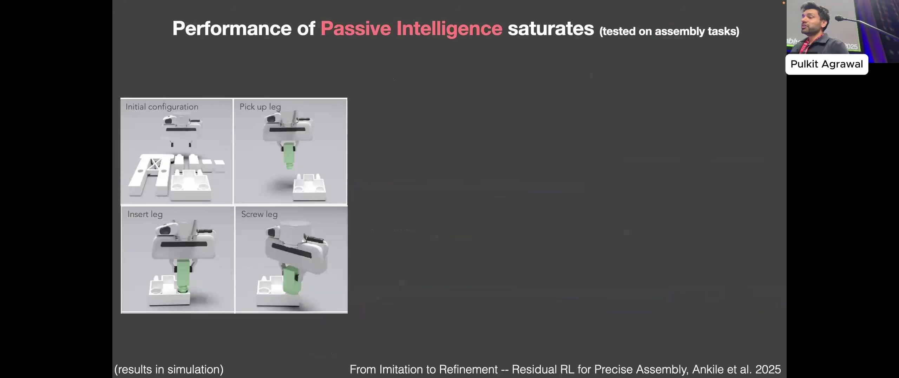
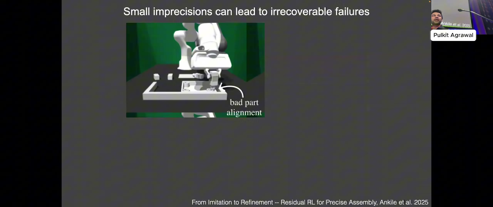
액션 청킹은 계획을 만들지만 반응성을 잃는다
청크 단위 행동 복제는 여러 액션을 한 번에 예측하고 그 구간을 개루프로 실행한다. 청크 도중 물체 자세나 파지가 달라져도 다음 예측 시점까지 반응하지 못한다. 작은 오차가 누적되어 실패가 되는 이유다.
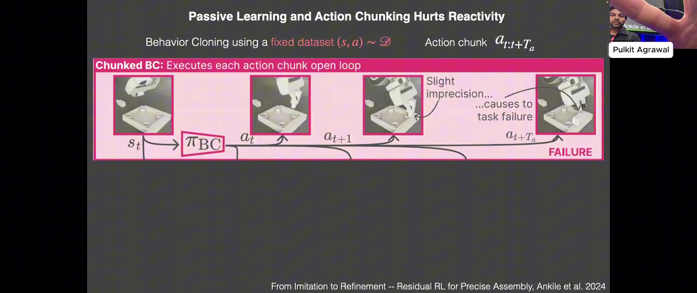
“사람의 데모는 계획에 가깝다. 물리적 상호작용에 충실한 제어는 RL이 맡는다.” BC와 RL의 역할 분담을 요약한 해석
실패를 버리지 않는 VLA 자기개선
실세계 RL의 첫 번째 병목은 샘플 비효율성이다. 발표는 과거의 hindsight relabeling을 언어 지시 VLA에 적용한다. “녹색 용기를 그릇에 넣어라”에는 실패했더라도 용기를 옮겼다면, 그 궤적은 “녹색 용기를 옮겨라”의 성공 사례가 된다.
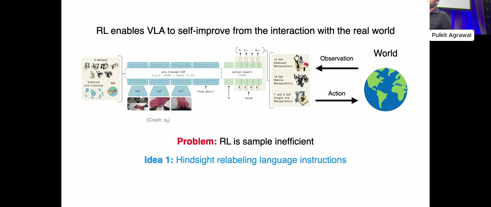
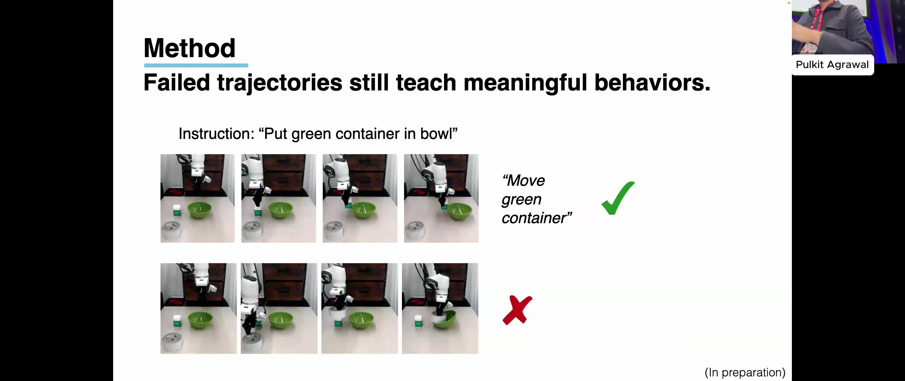
사람이 모든 궤적을 다시 설명할 수는 없다. VLM이 궤적을 관찰하고 실제로 달성된 목표를 자동 라벨링하면, 보상 0으로 폐기되던 데이터까지 VLA 갱신에 사용할 수 있다.
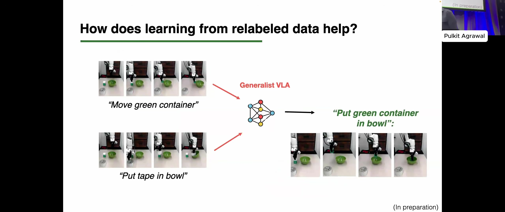
언어 민감성을 탐색 도구로 뒤집다
두 번째 병목은 RL 탐색이 현재 행동 주변에 머무르는 국소성이다. 그런데 embodied red teaming은 VLA가 의미상 같은 문장에도 크게 다른 성능을 낸다는 취약점을 발견했다. CALVIN과 RLBench 사례에서는 학습 표현에서 79.1%이던 성능이 실패를 유도하도록 최적화한 자연스러운 표현에서 3.1%까지 내려갔다.
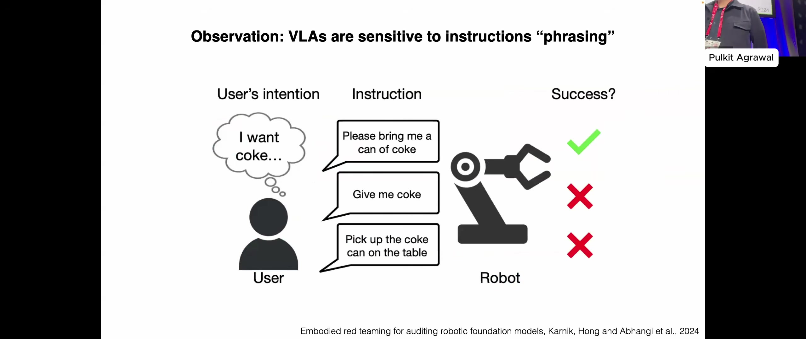
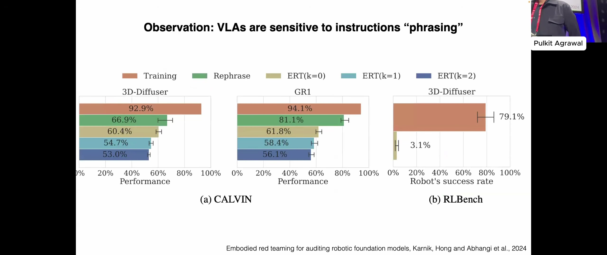
Prompt-driven Exploration은 이 취약성을 반대로 사용한다. 실패시키는 표현을 찾는 대신 같은 과제를 여러 방식으로 재서술해 성공시키는 프롬프트를 찾는다. VLA는 각 표현으로 행동하고, 성공·실패 신호를 통해 정책을 갱신한다. 재프롬프팅이 우연한 성공을 만들면 국소적 행동 탐색이 닿지 못한 영역까지 학습 신호가 확장된다.
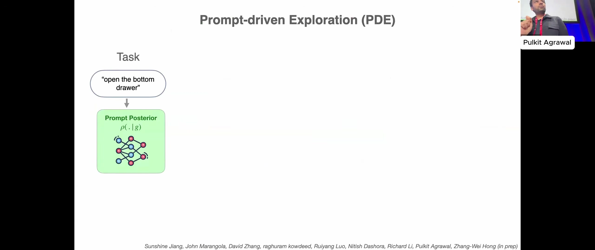
| 문제 | 전통적 처리 | 강연의 제안 | 얻는 학습 신호 |
|---|---|---|---|
| 원래 과제 실패 | 보상 0으로 폐기 | VLM 기반 hindsight relabeling | 실제로 달성된 다른 과제의 성공 데이터 |
| 국소적인 행동 탐색 | 현재 정책 주변에 노이즈 추가 | Prompt-driven Exploration | 의미 보존 재표현에서 발생한 새로운 성공 궤적 |
| 청크 실행 중 분포 이탈 | 다음 청크까지 개루프 실행 | 고주파 RL 컨트롤러 | 현재 접촉 상태에 반응하는 폐루프 행동 |
RL’s Razor: 평생 학습에서 덜 잊는 이유
Agrawal의 개인적 선호는 처음부터 끝까지 RL이다. 시뮬레이션에서 학습한 손 정책이 처음 보는 물체를 실세계에서 재배향한 이전 연구는 그 가능성을 보여준다. 그러나 핵심은 sim-to-real 갭을 완전히 없애는 데 있지 않다.
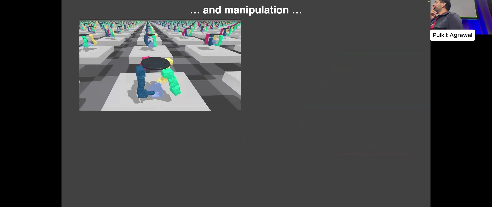
시뮬레이션은 완제품이 아니라 사전학습이다
sim-to-real 갭을 완전히 메울 수 없다고 인정하면 목표가 바뀐다. 시뮬레이션 정책을 zero-shot 배포할 완제품이 아니라 사전학습된 기반 모델로 보고, 실세계 상호작용으로 RL 미세조정하는 것이다. 이는 사전학습 VLA를 후속 학습하는 것과 같은 구조다.
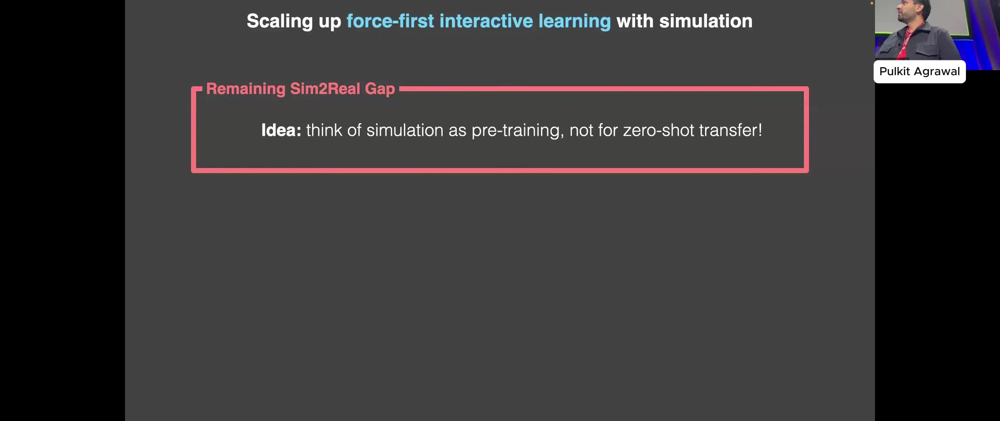
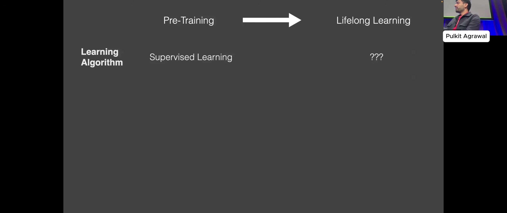
RL은 새 과제를 배우면서 이전 능력을 보존했다
발표의 비교에서는 RL 미세조정이 새 과제 정확도를 높이면서도 이전 과제 성능을 유지하지만, SFT는 기존 성능을 잃었다. 이 경향은 로봇 pick-and-place, MNIST의 3층 MLP, 수학, LLM, OpenVLA에서 반복됐다고 보고된다.
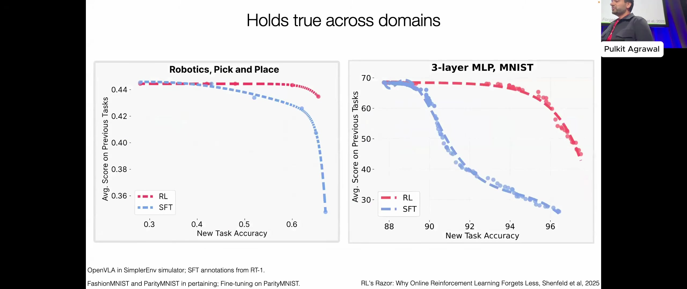
가중치 공간의 직관은 간단하다. 회색 영역을 새 과제에서 90% 이상의 성능을 내는 정책 집합이라고 하자. SFT는 주어진 정답 라벨을 향해 이동하므로 그 영역 안의 멀리 떨어진 점에 도달할 수 있다. RL은 현재 정책으로 데이터를 만들고 반복적으로 갱신하기 때문에 초기 정책에서 가까운 성공 해에 먼저 닿는다.
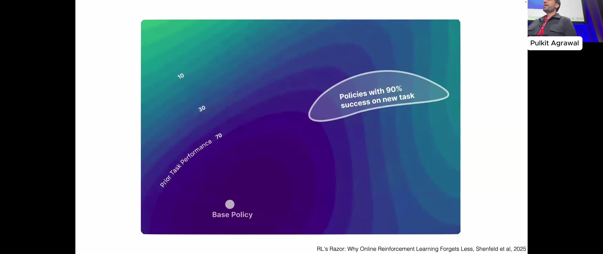
명시적 KL 규제가 아닌 on-policy의 암묵적 편향
발표는 이 현상을 RL’s Razor라고 부른다. RL 미세조정은 가능한 성공 정책 가운데 초기 정책과 KL 거리가 작은 해로 편향된다. 중요한 단서는 PPO나 GRPO에 포함되는 명시적 KL 정규화 항 때문이 아니라는 점이다. 해당 항을 제거한 ablation에서도 현상이 유지됐으며, 발표자는 on-policy 갱신 자체의 암묵적 성질이라고 주장한다.
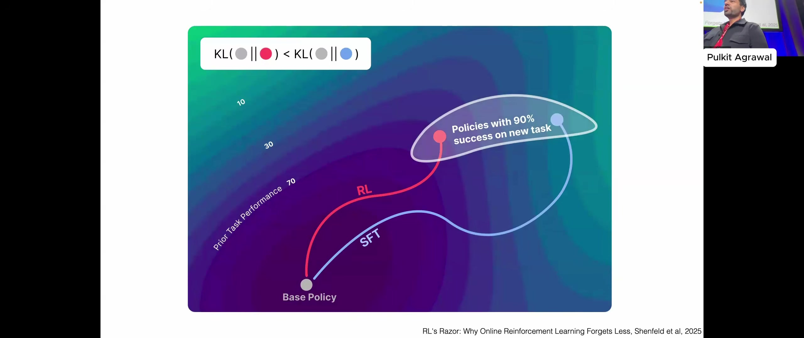
“RL은 항상 SFT보다 우월하다”는 보편 명제가 아니다. 강연이 지지하는 더 좁은 주장은, 순차 미세조정에서 on-policy 갱신이 기존 정책과 가까운 해를 선택하는 편향을 가져 망각을 줄일 수 있다는 것이다.
보상이 없을 때: self-distillation을 보상으로 읽기
실세계에는 명시적 보상 함수가 없는 경우가 많다. Self-Distillation Fine-Tuning은 같은 모델을 teacher와 student로 사용하되 컨텍스트를 달리한다. teacher에는 전문가 데모를 넣어 더 정확한 응답을 만들고, student는 그 출력을 최적화한다. 이때 in-context learning이 student가 따라야 할 보상 신호처럼 기능한다.
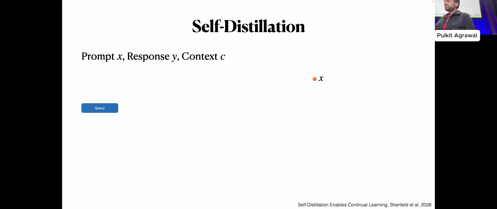
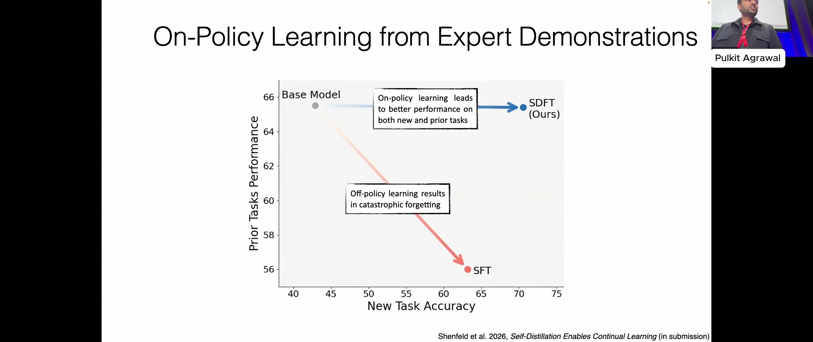
제시된 결과에서는 전문가 데모만 있고 별도 보상 함수가 없어도 SDFT가 새 과제와 이전 과제 성능을 함께 높였다. 반면 off-policy SFT는 과제를 순차적으로 학습할수록 기존 성능이 하락했다.
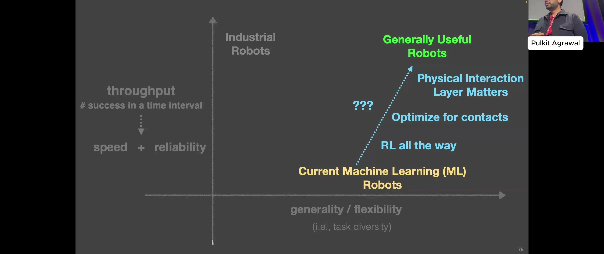
중장비·현장 로봇에 적용한다면
굴착기처럼 접촉력과 환경 불확실성이 큰 시스템에서는 이 강연의 처방이 특히 구체적인 설계 원칙으로 바뀐다.
01. 게인도 실험 변수로 보고한다
BC 기반 굴착 정책은 순응적 설정이 예측 오차를 흡수할 수 있다. 모델 비교 시 유압 제어기, 게인, 주파수를 함께 고정하거나 명시해야 한다.
02. 토양 접촉을 학습 목표에 넣는다
버킷과 토양의 상호작용은 위치 추종만으로 환원되지 않는다. 참조 궤적을 유지하면서 반력과 순응 여유를 함께 학습하는 구조가 필요하다.
03. 데모는 계획, RL은 저수준 반응
숙련 오퍼레이터의 데모로 굴착 순서를 학습하고, 토질 변화에 반응하는 빠른 제어만 RL로 다듬는 분업은 현실적인 도입 경로가 될 수 있다.
04. 시뮬레이션을 사전학습으로 제한한다
완벽한 토질 시뮬레이션을 기대하는 대신, 기본 정책과 안전한 탐색 습관을 먼저 학습한 뒤 제한된 현장 데이터로 적응시키는 편이 현실적이다.
05. 안전한 탐색 방식 자체를 전이한다
실기에서 무작위 탐색이 불가능하다면 시뮬레이션에서 안전 목적함수를 함께 최적화하고, 정책뿐 아니라 탐색 전략을 메타 수준에서 전이해야 한다.
06. 평생 학습과 인증 주기를 분리한다
덜 잊는 알고리즘도 계속 변하는 모델의 안전성을 자동 보장하지 않는다. 현장 학습, 검증, 승인, 배포를 분리한 명시적 운영 주기가 필요하다.
강한 주장일수록 남는 검증 과제도 크다
이 발표는 설득력 있는 실험과 통합적 관점을 제공하지만, 일부 결론은 아직 제한된 사례와 도메인에 기대고 있다.
- 5% 대 71%의 게인 결과는 특정 과제와 로봇의 사례다. 어떤 하드웨어·데이터·정책 조건에서 격차가 줄거나 역전되는지는 제시되지 않았다.
- RL’s Razor의 로보틱스 증거는 아직 제한적이다. OpenVLA 등에서 같은 경향이 관찰됐지만 주요 실증은 LLM을 포함한 여러 도메인에 분산돼 있다.
- 시뮬레이션을 사전학습으로 쓰더라도 기반 환경의 품질은 중요하다. 보상 설계, 환경 설계, 현실 격차 관리의 비용 자체가 사라지는 것은 아니다.
- off-policy RL로의 확장은 이론적으로 열려 있다. 사람 데모처럼 외부 분포의 데이터를 적극 활용하면서 RL’s Razor의 성질을 유지할 수 있는지는 추가 검증이 필요하다.
- 지속 학습은 인증과 충돌할 수 있다. 모델이 덜 잊는다는 경험적 결과와 안전 규격을 만족한다는 운영적 보장은 별개의 문제다.
Q&A에서 보완된 주장
| 질문 | 발표자의 답변 요지 | 해석 |
|---|---|---|
| 힘·임피던스 정보를 어떻게 활용하는가? | 행동 공간에 임피던스 노브나 관절 토크를 포함하면 RL이 자연스럽게 포섭할 수 있다. | BC/VLA가 고주파 물리 지능까지 데모만으로 흡수하기는 어렵다는 입장이다. |
| off-policy RL에도 RL’s Razor가 성립하는가? | 현재 이론은 없다. goal-conditioned on-policy RL과 hindsight relabeling의 결합을 대안으로 제시했다. | 실패 데이터를 쓰되 on-policy 성질을 보존하려는 절충이다. |
| LLM의 망각 결과가 VLA에도 전이되는가? | OpenVLA 비교에서도 동일한 경향이 재현됐다고 답했다. | 로봇 정책에서도 검증됐지만 모델과 과제 범위는 더 넓어져야 한다. |
| 실세계 온라인 학습은 안전한가? | 시뮬레이션에서 안전 목적함수와 안전한 탐색법을 함께 학습시킨다. | 정책의 zero-shot 전이보다 탐색 습관의 메타 전이에 가깝다. |
| VLA에 접촉력을 주면 RL 컨트롤러가 불필요한가? | 아니다. 높은 제어 주파수에서는 사람이 필요한 물리 피드백을 제공할 수 없다. | VLA를 플래너, RL을 빠르고 강건한 컨트롤러로 보는 분업을 재확인한다. |
출처와 작성 방법
이 글은 제공된 발표 영상의 장면별 메모를 바탕으로 논지를 재구성한 비평적 요약이다. 수치와 실험 주장은 발표자가 제시한 내용을 반영하며, 관련 논문의 원문 데이터나 재현 실험을 별도로 검증한 문헌 리뷰는 아니다. 인용부호 안의 문장은 강연의 핵심 의미를 한국어로 압축한 표현이다.
로봇의 지능은 신경망 안에만 있지 않다.
현실과 만나는 순간의 제어 방식까지가 정책이다.
이 강연이 남기는 가장 유용한 질문은 “BC인가 RL인가”의 승부가 아니다. 우리가 정책이라 부르는 경계를 어디까지 그어야 하는가에 가깝다. 컨트롤러, 접촉, 데이터 분포, 학습 이력까지 경계 안으로 들여오면 범용성과 처리량은 서로 반대되는 목표가 아니라 함께 설계할 대상이 된다.
지금 비교하는 정책들은 동일한 컨트롤러·게인·실행 주파수를 사용하고 있는가?
정책이 위치만 복제하는가, 아니면 힘과 순응성을 통해 접촉에 반응하는가?
새 환경에서 학습할 때 기존 능력과 안전 인증을 어떻게 보존할 것인가?